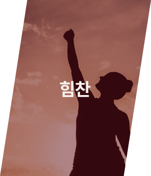
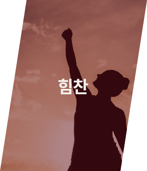

What about VALKYRIE
발키리는 북유럽 신화에서 오딘을 섬기는 전쟁의 여신, 여전사를 뜻하는 단어입니다.
운동은 흔히 자기 자신과의 전투라고 하죠.
그런 전투에서 승리를 쟁취하고자 하는 여성들을 위해 만들었습니다.
기존 여성브랜드의 부드럽고 여린 느낌을 탈피하기 위해 만들어진 발키리는
활동적이고 진취적인 여성들을 위한 스포츠 브랜드입니다.
튼튼한 스포츠 용품과 편안하게 입을 수 있는 스포츠웨어를 만들며
다양한 운동 정보와 식단 정보를 함께 제공합니다.
단순히 스포츠웨어를 판매하는 회사가 아닌, 이 세상의 수 많은 여전사들을 위해
서로 용기를 주고 이끌어주며 정보를 공유하는 커뮤니티를 함께 운영하고 있습니다.
더 이상 혼자 운동하지 마세요. 발키리가 함께 달리겠습니다.

I put my armor on,
Show you how strong how I am.
Concept

-


 


공정무역 목화에 대하여
공정무역은 지속 가능한 목화 재배를 권장합니다. 그것은 목화 농부들에게 보장된
공정무역 최저가격(Fairtrade minimum price) 과 공정무역 프리미엄(Fairtrade
premium)을 통해 경제적인 혜택을 제공하는 유일한 기준입니다.
공정무역은 세계에서 가장 가난한 지역의 55,000 여명의 목화 농부들과
함께 하고
있습니다. 2014년에는 인증된 공정무역 생산자 조합들이 그 전 해보다
높은 수치인
생산량의 평균 43%을 공정무역 기준에 부합하게 판매하였습니다.
공정무역을 통해서, 이미 수 천명의 목화 농부들의 삶이 향상되었습니다.
목화
협동조합은 더욱 조직화 되었고, 농부들은 이제 더 생산적으로 일을 하고 있습니다.
그리고 여성 노동자들은 남성 노동자들과 마찬가지로 투표권부터 임금까지
동등한
대우를 받고 있습니다. 4개 국가에서 실행된 공정무역 목화의 영향에 대한 연구
결과에서는 특히 공정무역의 양성평등의 효과에 주목하였습니다.
이 연구에서는
공정무역 기준 요건들이 여성 노동자들이 (남편이나 다른 남성인 가족으로부터
임금을 받지 않고) 직접 임금을 받을 수 있도록 하여 서
아프리카와
중앙 아프리카 여성들을 목화 재배에 더 많이 참여하게 만든 사실을 강조했습니다.
해당 연구를 통해 공정무역의 영향이 크다는 것을 알 수 있게 된 것입니다.